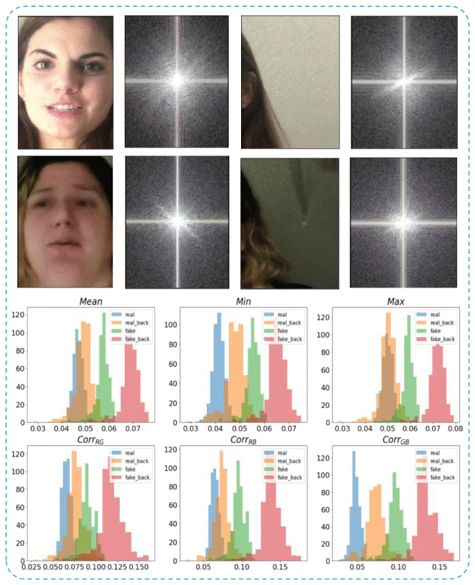
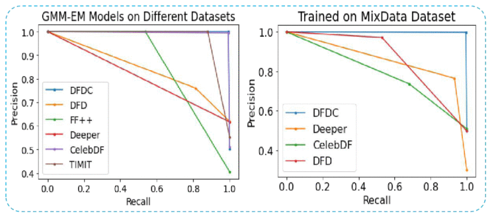

PUBLICATION论文 · IEEE IWBF · 2023
ABSTRACT摘要
Generative neural networks can create convincing synthesized results that are hard to tell apart from authentic content. With the proliferation of false news and disinformation online, developing effective techniques for detecting deepfakes has become urgent. Most recent detection algorithms rely on deep learning methods that need enormous volumes of labeled training data, making them impractical when data is scarce. 生成神经网络可以创建令人信服的合成结果，难以与真实内容区分。随着网上虚假新闻和错误信息的泛滥，开发有效的深度伪造检测技术已变得紧迫。大多数最近的检测算法依赖需要大量标记训练数据的深度学习方法，在数据稀缺时难以实用。
We conduct a comprehensive frequency spectrum analysis on deepfake frames and their color channels to detect spectral anomalies and statistical features. We propose Frequency Spectrum Statistical Features (FSSF), a compact 6-D feature map comprising Pearson correlation coefficients between RGB channel spectrums and descriptive statistics (Mean, Min, Max) of average spectrum differences. We employ both unsupervised GMM-EM and supervised SVM-RBF classifiers, requiring minimal training data while achieving high accuracy and strong cross-dataset generalization. 我们对深度伪造帧及其颜色通道进行全面的频谱分析，以检测频谱异常和统计特征。我们提出了频谱统计特征（FSSF）——一种紧凑的6维特征图，包含RGB通道频谱之间的皮尔逊相关系数和平均频谱差异的描述性统计量（均值、最小值、最大值）。我们采用无监督GMM-EM和监督SVM-RBF分类器，仅需最少训练数据即可实现高准确率和强跨数据集泛化。
Evaluations on FaceForensics++, DeepFakeTIMIT, DFD, Celeb-DF, DFDC, and DeeperForensics demonstrate that FSSF effectively exposes spectral discrepancies originating from generator upsampling operations. Our unsupervised approach achieves 99.8% AUC on DFDC, and our supervised multi-dataset strategy achieves an average 87.8% AUC across unseen domains, surpassing Xception and SPSL by significant margins. 在FaceForensics++、DeepFakeTIMIT、DFD、Celeb-DF、DFDC和DeeperForensics上的评估表明，FSSF有效暴露了源自生成器上采样操作的频谱差异。我们的无监督方法在DFDC上达到99.8% AUC，监督多数据集策略在未见域上达到平均87.8% AUC，大幅超越Xception和SPSL。
METHOD方法
We decompose the input frame into R, G, B channels and compute the 2D Discrete Fourier Transform (DFT) for each channel independently. The amplitude spectrum SpecR/G/B is obtained via the modulus of the complex DFT output. We then calculate cross-channel spectrum differences DRG, DRB, DGB and extract a compact 6-D Frequency Spectrum Statistical Feature (FSSF) map: Mean, Min, Max of the average spectrum differences, plus three Pearson correlation coefficients (CorrRG, CorrRB, CorrGB) between the channel spectrums. No deep network is required for feature extraction. 我们将输入帧分解为R、G、B通道，并独立计算每个通道的二维离散傅里叶变换（DFT）。通过复数DFT输出的模获得幅度频谱SpecR/G/B。然后计算跨通道频谱差异DRG、DRB、DGB，并提取紧凑的6维频谱统计特征（FSSF）图：平均频谱差异的均值、最小值、最大值，加上三个通道频谱之间的皮尔逊相关系数（CorrRG、CorrRB、CorrGB）。特征提取不需要深度网络。
We model the distribution of FSSF as a mixture of two Gaussian distributions — one for real frames and one for deepfakes. The Expectation-Maximization (EM) algorithm iteratively estimates the likelihood of each sample belonging to each distribution (E-step) and updates the means and variances (M-step). Real frames exhibit lower expectation values due to strong spectral agreement between color channels, while deepfakes show higher values caused by spectral anomalies from unconstrained channel generation. No labeled data is required. 我们将FSSF的分布建模为两个高斯分布的混合——一个用于真实帧，一个用于深度伪造。期望最大化（EM）算法迭代估计每个样本属于每个分布的可能性（E步）并更新均值和方差（M步）。真实帧由于颜色通道之间强烈的频谱一致性而表现出较低的期望值，而深度伪造由于无约束通道生成导致的频谱异常而显示出较高值。不需要标记数据。
For supervised learning, we employ a Support Vector Machine (SVM) with a radial basis function (RBF) kernel to locate the maximum-margin separating hyperplane between real and deepfake FSSF distributions. We first normalize the two Gaussian expectation values of source training features to [0,1]. During cross-dataset testing, target features are scaled using the known source expectation values before being fed into the pre-trained SVM. This normalization bridges the domain gap between datasets with different generation pipelines. 对于监督学习，我们采用具有径向基函数（RBF）核的支持向量机（SVM）来定位真实和深度伪造FSSF分布之间的最大间隔分离超平面。我们首先将源训练特征的两个高斯期望值归一化到[0,1]。在跨数据集测试期间，目标特征使用已知的源期望值进行缩放，然后输入预训练的SVM。这种归一化弥合了具有不同生成流程的数据集之间的域差距。
To improve real-world applicability, we combine four diverse source datasets (DFD, DFDC, Celeb-DF, Deeper) with FF++ to form a mixed training set, then test on the remaining unseen dataset. The diversity of training samples enables the model to learn general spectral anomalies rather than dataset-specific artifacts. This strategy boosts cross-dataset AUC by up to 14% compared to single-dataset training, proving that FSSF captures intrinsic generator fingerprints rather than superficial dataset biases. 为了提高现实世界的适用性，我们将四个不同的源数据集（DFD、DFDC、Celeb-DF、Deeper）与FF++组合形成混合训练集，然后在剩余的未见数据集上进行测试。训练样本的多样性使模型能够学习通用频谱异常，而非数据集特定的伪影。与单数据集训练相比，该策略将跨数据集AUC提升了高达14%，证明FSSF捕捉的是内在生成器指纹而非表面数据集偏置。

Fig. 2 — Frequency spectrum analysis of real (1st row) and deepfake (2nd row) frames, and histogram distributions of the proposed statistical features (Mean, Min, Max, Corr_RG, Corr_RB, Corr_GB) on DFDC samples. Real face and background frames (blue/orange) show high correlation; deepfake frames (green/red) exhibit independent spectral distributions. © 2023 IEEE. 图2 — 真实（第一行）和深度伪造（第二行）帧的频谱分析，以及在DFDC样本上提出的统计特征（均值、最小值、最大值、Corr_RG、Corr_RB、Corr_GB）的直方图分布。真实人脸和背景帧（蓝/橙）显示出高相关性；深度伪造帧（绿/红）表现出独立的频谱分布。© 2023 IEEE。RESULTS结果
The GMM-EM classifier achieves 99.8% AUC on DFDC — one of the largest and highest-quality deepfake datasets — with 99.3% recall and 100% precision. On Celeb-DF and TIMIT, it achieves 99.5% and 97.3% AUC respectively. Performance remains strong on FF++ (86.2%), DFD (84.5%), and Deeper (81.3%), confirming that spectral anomalies are consistent across diverse generation pipelines even without any labeled training data. GMM-EM分类器在DFDC（最大且最高质量的深度伪造数据集之一）上达到99.8% AUC，召回率99.3%，精确率100%。在Celeb-DF和TIMIT上分别达到99.5%和97.3% AUC。在FF++（86.2%）、DFD（84.5%）和Deeper（81.3%）上仍保持强劲性能，证实即使在没有任何标记训练数据的情况下，频谱异常在不同生成流程中也是一致的。
Using SVM-RBF, our method achieves intra-dataset AUCs of 99.6% on DFDC, 99.1% on TIMIT, 99.3% on Celeb-DF, 97.0% on Deeper, 95.3% on FF++, and 90.5% on DFD. The lowest performance on DFD (c23 compressed) is attributed to lossy compression discarding high-frequency forensic cues. These results demonstrate that FSSF provides highly discriminative features when training and testing distributions align. 使用SVM-RBF，我们的方法在数据集内达到99.6%（DFDC）、99.1%（TIMIT）、99.3%（Celeb-DF）、97.0%（Deeper）、95.3%（FF++）和90.5%（DFD）的AUC。DFD（c23压缩）上的最低性能归因于有损压缩丢弃了高频取证线索。这些结果表明，当训练和测试分布一致时，FSSF提供了高度可区分的特征。
Models trained on DFDC generalize well to unseen datasets, achieving strong cross-AUC on DFD (74.4%), FF++ (79.3%), and TIMIT (79.1%). DeeperForensics presents a greater challenge (38.5% from DFDC) because it employs an improved generation pipeline that leaves different spectral traces. Conversely, models trained on Deeper achieve 88.6% on TIMIT and 97.0% intra, confirming that datasets sharing generation lineages (FF++ → Deeper) exhibit transferable spectral fingerprints. 在DFDC上训练的模型很好地泛化到未见数据集，在DFD（74.4%）、FF++（79.3%）和TIMIT（79.1%）上实现强劲的跨AUC。DeeperForensics带来更大挑战（来自DFDC的38.5%），因为它采用改进的生成流程，留下不同的频谱痕迹。相反，在Deeper上训练的模型在TIMIT上达到88.6%、数据集内97.0%，证实共享生成谱系的数据集（FF++ → Deeper）表现出可迁移的频谱指纹。
Training on a mixed dataset (DFD + DFDC + Celeb-DF + Deeper + FF++), our FSSF-SVM achieves an average cross-dataset AUC of 87.8%, outperforming Xception (78.4%) and SPSL (81.9%). Specifically, we achieve 99.8% on DFDC (+24.7% over Xception), 85.9% on Deeper (+2.9% over SPSL), 79.0% on Celeb-DF, and 86.8% on DFD (+2.2% over SPSL). This proves that classical frequency statistics, when carefully designed, can surpass deep learning baselines in generalization. 在混合数据集（DFD + DFDC + Celeb-DF + Deeper + FF++）上训练，我们的FSSF-SVM实现平均跨数据集AUC 87.8%，超越Xception（78.4%）和SPSL（81.9%）。具体而言，我们在DFDC上达到99.8%（比Xception高24.7%），Deeper上85.9%（比SPSL高2.9%），Celeb-DF上79.0%，DFD上86.8%（比SPSL高2.2%）。这证明经过精心设计的经典频域统计可以在泛化上超越深度学习基线。

Fig. 3 — Precision-Recall plots. Left: Unsupervised GMM-EM evaluation on individual datasets. Right: Supervised generalization performance of FSSF-SVM trained on mixed dataset and tested on DFDC, Deeper, Celeb-DF, and DFD. © 2023 IEEE. 图3 — 精确率-召回率曲线。左：无监督GMM-EM在单个数据集上的评估。右：在混合数据集上训练并在DFDC、Deeper、Celeb-DF和DFD上测试的FSSF-SVM监督泛化性能。© 2023 IEEE。LIMITATIONS & FUTURE WORK局限性与未来工作
Unknown next-generation generators. As deepfake synthesis evolves (e.g., StyleGAN2, diffusion models), generators may employ better upsampling or spectral regularization that diminishes the color-channel correlation discrepancies we rely on. The DeeperForensics dataset already indicates this trend with its improved pipeline leaving different spectral traces. 未知下一代生成器。随着深度伪造合成技术的发展（如StyleGAN2、扩散模型），生成器可能采用更好的上采样或频谱正则化，减少我们依赖的颜色通道相关性差异。DeeperForensics数据集已经通过其改进的流程留下不同频谱痕迹表明了这种趋势。
Compression artifacts. The DFD (c23) compressed version shows lower detection rates because lossy JPEG compression discards high-frequency details that carry our forensic cues. Future work should explore compression-robust spectral features or pre-processing to recover high-frequency components. 压缩伪影。DFD（c23）压缩版本显示出较低的检测率，因为有损JPEG压缩丢弃了承载我们取证线索的高频细节。未来工作应探索压缩鲁棒的频谱特征或预处理以恢复高频成分。
Video temporal coherence. This work focuses on single-frame spectral analysis. Temporal inconsistencies across video frames — such as flickering spectral signatures between frames — are not explicitly modeled but could provide complementary evidence for video-level detection. 视频时序一致性。本工作专注于单帧频谱分析。视频帧之间的时序不一致性——如帧间闪烁的频谱特征——未被显式建模，但可为视频级检测提供补充证据。
Ethical considerations. Like all forensic tools, FSSF carries dual-use risk. Responsible deployment requires transparency about confidence scores and human-in-the-loop verification, especially given that false positives in identity-sensitive contexts can cause asymmetric harm. 伦理考量。与所有取证工具一样，FSSF具有双重用途风险。负责任的部署需要关于置信度分数的透明度和人在回路验证，特别是在身份敏感环境中假阳性可能导致不对称危害的情况下。
BIBTEX引用
@INPROCEEDINGS{10157211,
author={Amin, Muhammad Ahmad and Hu, Yongjian and She, Huimin and Li, Jicheng and Guan, Yu and Amin, Muhammad Zain},
booktitle={2023 11th International Workshop on Biometrics and Forensics (IWBF)},
title={Exposing Deepfake Frames through Spectral Analysis of Color Channels in Frequency Domain},
year={2023},
volume={},
number={},
pages={1-6},
keywords={Deepfakes;Image forensics;Image color analysis;Biometrics (access control);Frequency-domain analysis;Conferences;Supervised learning;Deepfakes;Statistical Features;Spectrum Analysis;Image Forensics;Generalization Capability},
doi={10.1109/IWBF57495.2023.10157211}
}COPYRIGHT NOTICE版权声明
© 2023 IEEE. Personal use of this material is permitted. Permission from IEEE must be obtained for all other uses, in any current or future media, including reprinting/republishing this material for advertising or promotional purposes, creating new collective works, for resale or redistribution to servers or lists, or reuse of any copyrighted component of this work in other works. © 2023 IEEE。允许个人使用此材料。所有其他用途必须获得IEEE许可，包括在任何当前或未来媒体中重印/再版此材料用于广告或促销目的、创建新的集体作品、转售或重新分发到服务器或列表，或在其他作品中重用此作品的任何受版权保护的组件。
This page is a personal academic landing page. The full paper is available via IEEE Xplore. Figures are reproduced with permission from 2023 11th International Workshop on Biometrics and Forensics (IWBF). 本页面为个人学术着陆页。完整论文可通过IEEE Xplore获取。图表经2023第11届生物识别与取证国际研讨会（IWBF）许可转载。